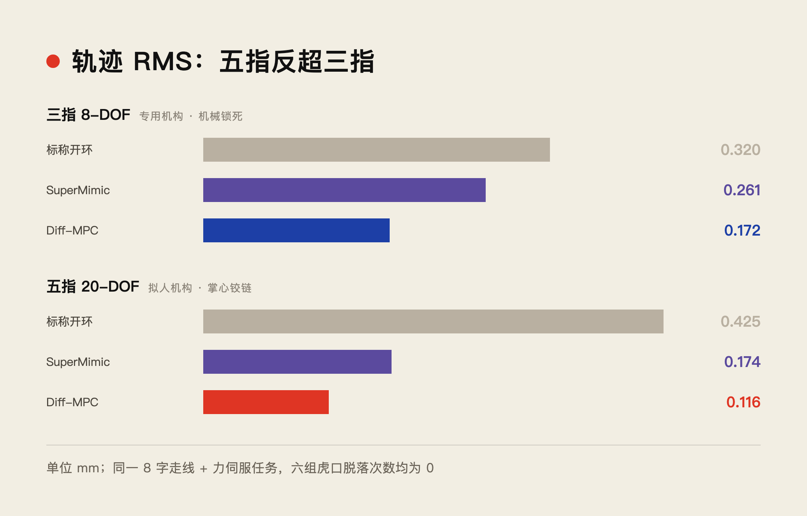
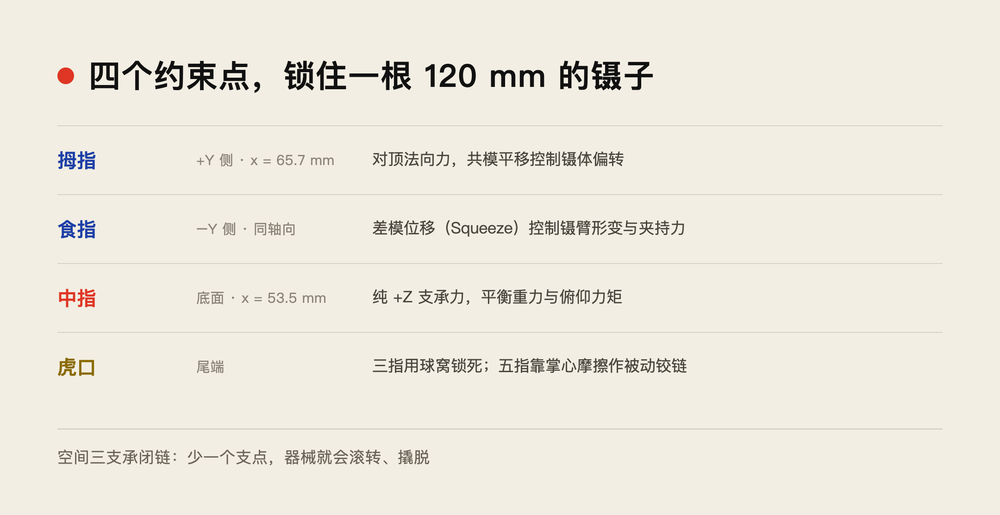
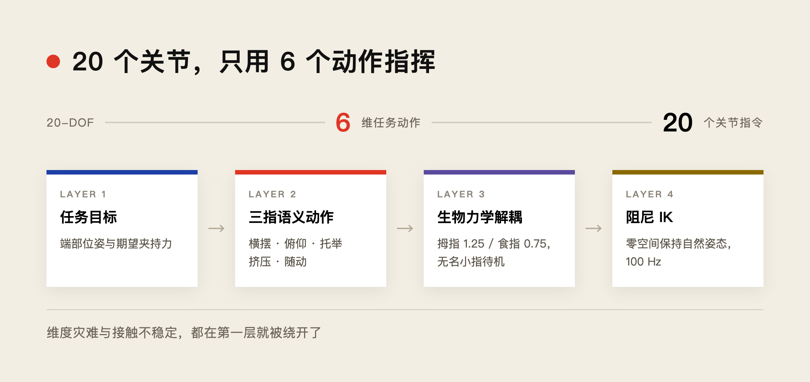
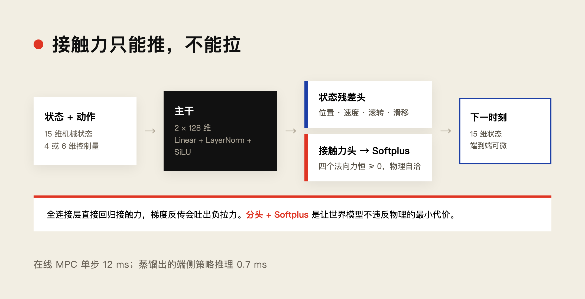

在显微外科与微创手术中，器械（镊子、持针钳）的精确位姿跟踪与微小夹持力伺服，直接决定缝合质量。
这份报告整理了三指专用手（8-DOF）与拟人五指手（20-DOF）在无代理球、全真实摩擦与滑移接触条件下的工作：动力学建模、五指到三指的任务空间降维映射、可微世界模型（Diff-WM）的构建，以及在线滚动可微 MPC 与离线 BPTT 策略的控制效果。
任务是一个空间三维 8 字走线：横向 ±4 mm @ 0.50 Hz，竖向 ±2 mm @ 0.25 Hz，叠加 0.2—0.6 N @ 0.25 Hz 的复合正弦夹持力伺服。
▲ ■ ●
一、先把结论放在前面
同样跑这套任务，五指手的轨迹误差从开环的 0.425 mm 降到 0.116 mm，降幅 72.6%；横向误差只剩 0.039 mm。这个成绩不只是「追上」三指专用机构，而是比三指手最好的 0.172 mm 还精确 32.5%。

评测结果
三指手那一侧，在线 MPC 把误差从 0.320 mm 压到 0.172 mm，夹持力 RMS 从 0.087 N 降到 0.023 N。
六种组合的虎口脱落次数都是 0。完整数值在评测脚本输出的 diff_wm_experiment_summary.json 里。
还有一个结论容易被忽略：在完全剔除人工弹簧与代理球、只依赖真实 STL 接触网格和库仑摩擦锥的环境下，摩擦滑移对误差的贡献率从 80.7% 被闭环压到可以忽略。
▲ ■ ●
二、三指夹持的本质：四个约束点
三指手和人手持笔、持镊，本质上是同一类空间三支承闭链机构。器械长轴 L = 120 mm，位姿被四个物理边界同时约束。

三指夹持的四个约束点
- 对捏接触点对：拇指在器械 +Y 侧（x = 65.7 mm），食指在 −Y 侧。两指施加相互对顶的法向压力。共模平移控制镊体偏转，差模相对位移（Squeeze）控制镊臂弹性形变，进而调节镊尖对组织的夹持力。
- 竖向支承点：中指在器械下方（x = 53.5 mm），提供纯向上的支承法向力，用来平衡重力力矩和俯仰。
- 尾端支点：三指手用刚性球窝机械约束锁死根部；五指手则靠虎口与掌心的网格接触摩擦，构成一个被动虚拟铰链。
这套结构一旦摆动，指腹与镊体之间必然产生相对滑动。按库仑摩擦定律，切向力上限被法向力锁住：切向力不超过 μ 乘以法向力。
消融实验给出的判断很直接：标称开环下，超过 80% 的跟踪误差不是执行器迟滞，而是法向力微小波动引起的摩擦打滑和重力下坠。所以闭环控制器必须能感知并反向补偿这个滑移量。
▲ ■ ●
三、把 20 个关节压成 6 个动作
拟人五指手有 20 个主动旋转关节。直接在 20 维关节空间里做强化学习或最优控制，会同时撞上维度灾难和接触不稳定。
系统用的是分层任务空间映射：先在三指语义下定义 6 维动作，再经生物力学解耦分配到各指，最后由带零空间的阻尼最小二乘逆运动学落到 20 个关节指令上。

从任务到关节的四层映射
6 个归一化控制量各管一件事：
- 横向与竖向位移，驱动镊体横摆与俯仰；
- 中指托盘的竖向抬升，平衡重力与俯仰力矩；
- 闭合夹捏行程，经二次校准多项式换算成目标夹持力；
- 中指主动随动侧向位移，消掉它对横摆的寄生剪切摩擦；
- 拇指与食指的非对称微调，纠正指腹接触曲率差异造成的偏摆。
这里有个容易被忽略的细节：人手拇指腕掌关节的刚度通常远大于食指近端指节。如果两指走同样的关节行程，镊体中心线会侧移，甚至破坏对捏稳定。所以引入刚度权重，拇指 1.25、食指 0.75，用非对称挤压量把偏移补回来。
中指最初的设计也踩过坑。早期用侧立指节接触，法向矢量偏离竖直，产生高达 1.2 N 的侧向干扰分力，横摆时带来 −4.2° 的侧向滚转力矩，很容易把镊体撬脱虎口。改成水平圆柱托架、把法向严格锁在 +Z 之后，寄生滚转角降到 1.2° 以内，脱落率归零。
逆运动学每个控制周期（100 Hz）求解一次，带阻尼项和零空间正则项，零空间吸引增益取 0.15。它让手指在满足接触点跟踪的同时，主动回到生物自然的休息姿态，无名指与小指锁在安全弯曲位，顺带消除了冗余带来的奇异姿态。
▲ ■ ●
四、可微世界模型：接触力必须是正的
Diff-WM 的输入是机械状态与控制动作的拼接，主干是两层 128 维的 Linear + LayerNorm + SiLU，输出分成两个头。

Diff-WM 的双头结构
分头的原因在物理上：接触力是单边约束，只能推、不能拉，法向力恒正。如果用一个全连接层直接回归，梯度反传经常吐出非物理的负拉力。
所以状态残差走一个头，接触法向力单独走一个头，末端接 Softplus，保证输出天然非负。这样世界模型既保持端到端可微，又内生满足物理自洽。
15 维状态向量覆盖三件事：器械运动学（端部偏差、速度、滚转、俯仰）、接触力学（端部夹持力、四个法向力、滑移量）、任务目标（参考位置与参考力）。
▲ ■ ●
五、两个控制器：在线 12 ms，端侧 0.7 ms
在线滚动可微 MPC。 每个控制周期把动作优化构造成「通过世界模型向前展开、再反向传播」的目标函数极小化问题。预测时域 8 步，也就是未来 80 ms。损失里同时管四件事：位置跟踪、夹持力跟踪、滑移与滚转抑制，外加一个虎口脱落屏障——当虎口法向力低于 0.065 N 时开始二次惩罚。
梯度由 PyTorch Autograd 给出，Adam 做 6 次内部迭代，单步求解约 12 ms。
还有一个工程细节很关键：动作热启动。把上一时刻的优化序列整体后移一位作为初始猜测，连续时间的动作平滑度基本靠它维持。
SuperMimic 离线策略。 为了在极低算力的端侧微控制器上跑，用 Diff-WM 做沿时间反向传播，蒸馏出一个极简 MLP：两层 64 神经元、Tanh 激活。推理只需 0.7 ms，控制带宽可以轻松推到 1000 Hz。在标称平滑扰动下，它的精度已经很接近在线 MPC——五指手 RMS 0.174 mm。
▲ ■ ●
六、为什么五指能反超三指
三指专用机构的优势很清楚：机械限位窝把尾部完全锁死，底托是纯水平刚性平面，自由度只有 8 个，标称开环就有 0.320 mm 的表现。
它的局限也同样清楚：缺少姿态微调自由度。器械出现大角度倾斜或外部侧向干扰时，因为没有第 4、5 个支承指节，它无法动态重构抓握构型。
五指手在未优化的基线阶段反而更差——指腹高阶曲率加多关节耦合，很容易接触侧滑，甚至虎口脱落。
但在引入纯 +Z 力学中指支撑和可微世界模型的闭环补偿之后，情况完全反过来了。最终 0.116 mm 的成绩说明一件事：多自由度冗余，只要任务空间映射合理、梯度补偿到位，就能转化为更高的自适应操作精度。
▲ ■ ●
七、为什么必须「不用代理球」
早期仿真里，如果用弹簧代理球把器械和手指固定住，数值上很容易收敛，但它彻底掩盖了物理本质：器械在指间的滑移、受压后的形变回弹、以及倾覆掉落。
摩擦滑移是真实的自由度。微米级精密微操中，人手并不是靠硬卡位，而是靠指腹的切向静摩擦和微小滑移做微调。
也正因为环境如实反映了接触非线性和滑移下坠，世界模型学到的「下一时刻状态对当前动作的偏导」才有物理意义——它才能通过微调夹持力，去动态掌控滑移的边界。
如果一开始就把器械焊死在手上，这个问题就被定义掉了。
▲ ■ ●
八、代码与数据
- 仿真与物理包装环境
env_wrapper.py - 可微世界模型定义
world_model.py - 在线滚动可微 MPC
diff_mpc.py - SuperMimic 神经策略
bptt_policy.py - 多构型对比评测
compare_3f_vs_5f.py - 实验完整数值
diff_wm_experiment_summary.json
以上代码位于 SimplyFingerTest/src/diff_wm/，结果与视频在 SimplyFingerTest/results/diff_wm/。
本报告数据来自同一套 MuJoCo 接触环境下的六组对照实验；不同构型的关节数、接触几何与基线控制器不同，数值仅用于构型间对比，不代表真实器械的临床精度。